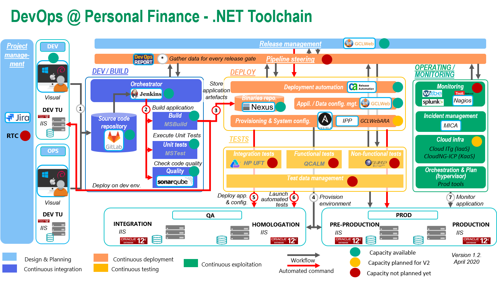

The DevOps@PF program (Dofin) aims to developed & deployed tools suite to speed up developpment and delivery process (Todo mettre un lien vers le doc d'evangelisation) a.k.a toolchain.
Each development and hosting platefom is coming with is own dedicated version of the toolchain : Java/WasND, .NET/IIS, SQL/Oracle, SQL/M$ SQL server and more to come.
This web site is a dedicated place for getting hight level of information about the toolchains why built and drill down into dedicated documentation in order to give you a full understanding and access to all the tooling composing the toolchains : let's see by your self by selecting your favorite one :
-
ToolChain Java/Liberty ITCloud

-
Toolchain .NET/IIS ITCLoud

- Toolchain Java/Was ND ITCloud 
keep in touch with the Dofin team : core team email